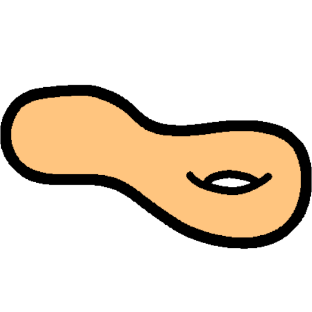

Research Interests
I am interested in mathematical physics. The broad problems I like to think about include quantum gravity, AdS/CFT, and quantum field theories using differential geometry. Recently I have been thinking about tractor calculus and conformal hypersurfaces.